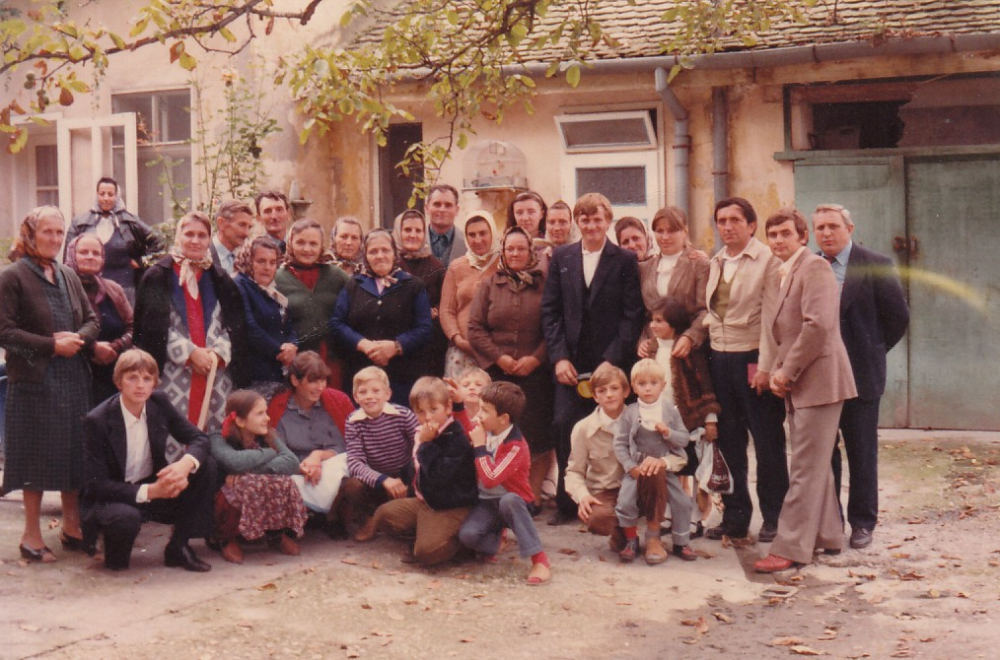
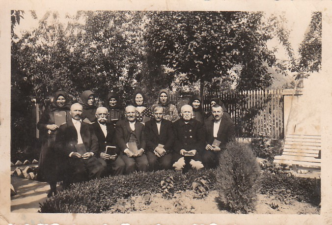
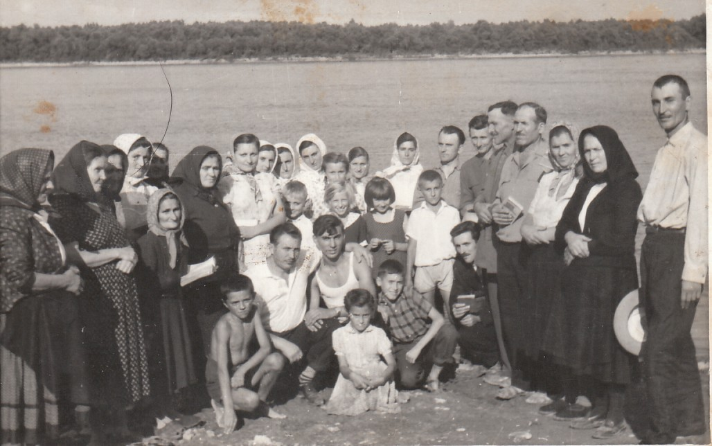
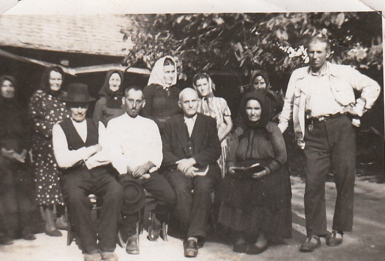
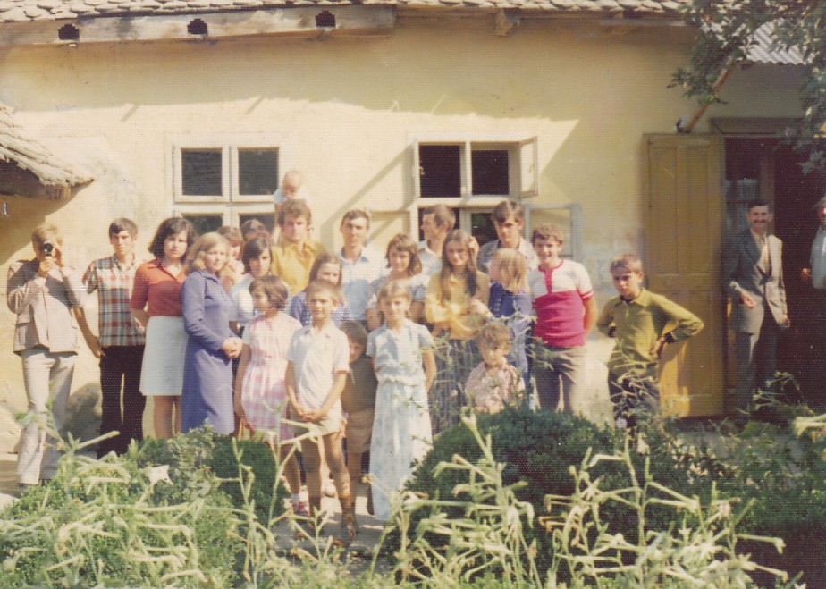
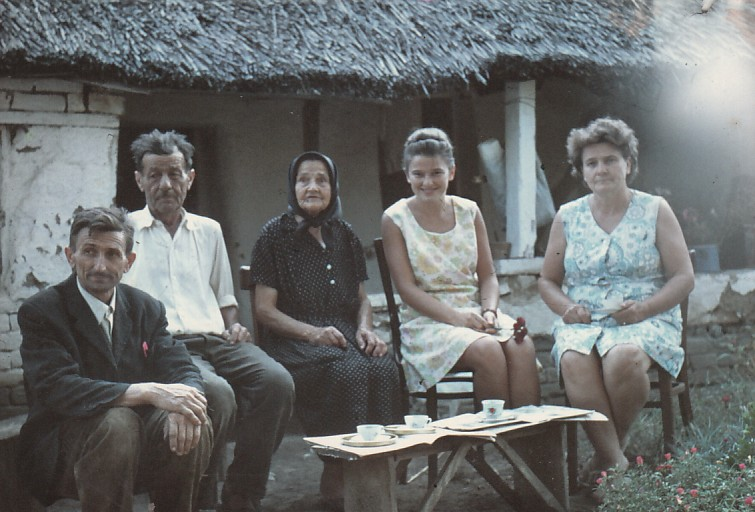
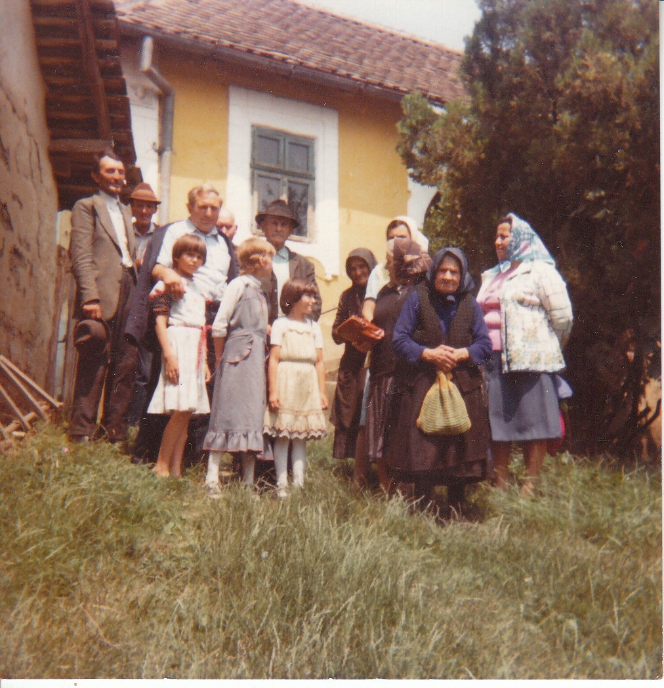
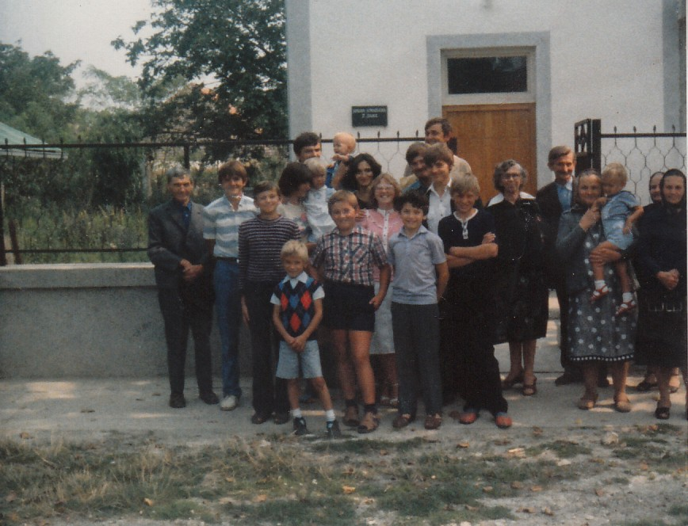
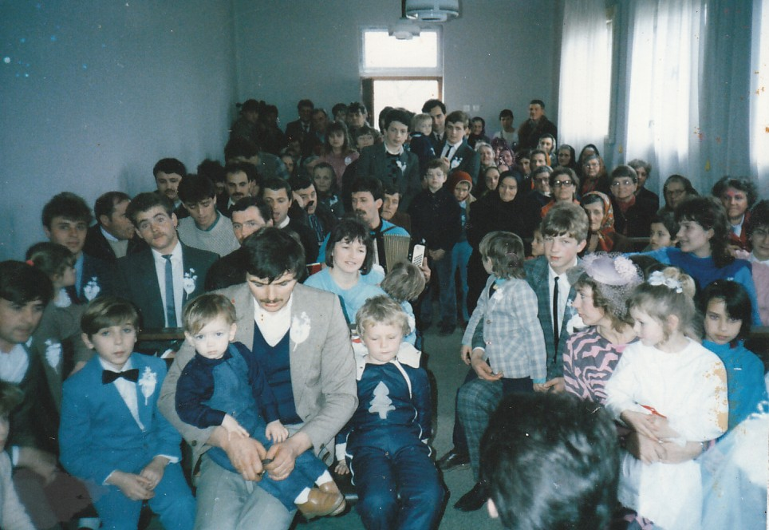
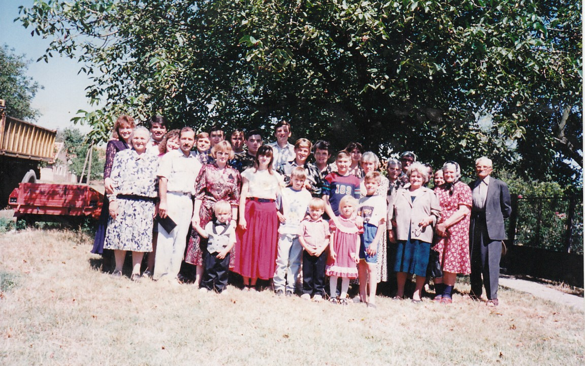

Počeci i samonikle grupe
Crkva Hrišćana Sedmog Dana je zvanično nastala 1923. godine, ali tragovi pokreta i samostalnih grupa pamte se još od 1919. godine. Ti počeci nisu nastali kao rezultat velike spoljne organizacije, već kroz iskreno čitanje Svetog pisma, molitvu i želju običnih ljudi da žive po onome što su razumeli iz Božje Reči.
Jedna od prvih poznatih grupa postojala je u mestu Zaklopača u Srbiji. Vernici su se okupljali, proučavali Bibliju i svetkovali subotni dan onako kako su ga razumeli iz Svetog pisma. Njihova bogosluženja i zajednički skupovi trajali su godinama, sve do 1946. godine, kada su saznali za još jednu grupu vernika koja je živela svega dvadesetak kilometara dalje, preko Dunava, u banatskom mestu Pločica.
{kind=link}

Zbog tadašnjih životnih okolnosti, ograničene komunikacije, kao i burnog vremena pre, tokom i neposredno posle Drugog svetskog rata, ove dve grupe dugo nisu znale jedna za drugu. Iako su bile prostorno blizu, gotovo dve decenije delovale su odvojeno. Jedan od starešina tog vremena zvani Damjan, nazivao je takve vernike „samoniklima“, jer su, bez spoljne organizacione podrške, čitajući Sveto pismo sami došli do uverenja da treba svetkovati subotu i organizovati zajednička bogosluženja.
Susret grupa iz Zaklopače i Pločice 1946. godine bio je važan trenutak u istoriji zajednice. Vernici koji su do tada odvojeno hodili sličnim putem prepoznali su jedni u drugima istu želju: da Hristos bude središte vere, da Sveto pismo bude najviši autoritet i da se crkveni život gradi na iskrenosti, zajedništvu i poslušnosti Božjoj Reči. Od tog vremena zajednica se postepeno širila i povezivala sa drugim vernicima i grupama.
{kind=link}

{kind=link}

{kind=link}

Zajednice u Banatu
Članovi Crkve Hrišćana Sedmog Dana dolazili su iz različitih verskih sredina. Neki su ranije pripadali drugim hrišćanskim zajednicama, među njima je bilo i vernika koji su ranije bili adventisti, kao i nazareni koji su, čitajući Sveto pismo, promenili svoje razumevanje o danu odmora. Ova raznolikost pokazuje da se zajednica nije gradila na ljudskoj tradiciji ili pritisku, već na ličnom osvedočenju i spremnosti da se vera proverava u svetlu Svetog pisma.
U mnogim mestima u Banatu postojale su slične grupe. Jedan od poznatih primera jeste Banatsko Novo Selo, gde je u jednom periodu zajednica brojala veliki broj članova. Vernici su se okupljali radi molitve, proučavanja Biblije i razgovora o veri. Sastanci su ponekad trajali dugo, danju i noću, jer su braća i sestre želeli da svoja shvatanja usklade sa Svetim pismom. Nisu imali organizaciju iznad sebe koja bi im nametala čvrsta pravila, već su zajednički tragali za istinom, spremni da promene svoje razumevanje ako bi iz Biblije uvideli da nešto treba sagledati drugačije.
{kind=link}

{kind=link}

{kind=link}

Upravo ta spremnost na ponizno preispitivanje ostala je jedna od važnih osobina zajednice. Vera se nije doživljavala kao formalnost, niti kao zatvoren sistem u kome se ljudska mišljenja moraju braniti po svaku cenu. Naprotiv, postojalo je uverenje da je hrišćanin pozvan da raste u poznanju Boga, da pažljivo sluša Božju Reč i da ostane otvoren za jasnije razumevanje istine. Takav duh želimo da sačuvamo i danas: da poštujemo ono što smo do sada razumeli, ali i da budemo dovoljno ponizni da prihvatimo jasnije svetlo kada ga prepoznamo u Svetom pismu.
Zajedništvo bez prisile
Tokom istorije zajednice postojale su i razlike u pojedinim običajima i načinima bogosluženja. Na primer, neke crkve su Svetu večeru održavale isključivo uveče, smatrajući da sam naziv „večera“ ukazuje na vreme njenog održavanja, dok su druge zajednice ovaj obred obavljale subotom tokom dana. Ipak, te razlike nisu bile razlog za sukobe ili raskole. Vernici su nastojali da prepoznaju suštinu — Hristovo telo i krv, Njegovu žrtvu i zajedništvo u Njemu — a ne da se prepiru oko forme. Takav pristup svedoči o duhu tolerancije, bratskog razumevanja i želje da se jedinstvo sačuva bez prisile.
Crkva Hrišćana Sedmog Dana kroz istoriju nije bila registrovana kao crkva u savremenom administrativnom smislu, ali su njeni skupovi bili uredno prijavljivani nadležnim vlastima. Postojala je evidencija okupljanja i odgovorna lica za organizaciju skupova. Početkom dvehiljaditih godina razmatrana je mogućnost formalne registracije, ali je, u skladu sa tadašnjim okolnostima i pravom na slobodno okupljanje, zajednica nastavila da deluje na način na koji je i ranije funkcionisala.
{kind=link}

{kind=link}

{kind=link}

Povezivanje sa srodnim zajednicama
Posebno važan period nastupio je oko 2000. godine, kada je bolja komunikacija putem interneta omogućila povezivanje sa srodnim grupama i crkvama van granica naše zemlje. Tada su uspostavljeni kontakti sa braćom i sestrama iz Ukrajine, Rusije, Moldavije, Češke, Poljske, Nemačke i drugih zemalja. Susreti sa vernicima koji su delili isto ili veoma slično razumevanje vere doneli su veliku radost i ohrabrenje. Kao što je prorok Ilija nekada mislio da je sam, a Bog mu otkrio da ima još onih koji su Mu ostali verni, tako je i ova zajednica doživela radost saznanja da nije sama na svom putu.
Oko 2005. godine veze sa nekim od tih zajednica postale su naročito bliske. Posebno se pamti zajedništvo sa braćom i sestrama iz Ukrajine, sa kojima je pružena ruka zajedništva i podeljena Sveta večera. To povezivanje nije bilo samo administrativno ili formalno, već bratsko, duhovno i zasnovano na zajedničkom poverenju u Sveto pismo i Hrista kao glavu Crkve.
Nasleđe koje obavezuje
Zato istoriju Crkve Hrišćana Sedmog Dana ne posmatramo samo kao sećanje na prošlost. Ona je podsetnik na odgovornost koju imamo danas: da veru ne nasledimo samo kao običaj, već da je živimo kao lični odnos sa Bogom; da ne čuvamo samo ime zajednice, već njen duh; i da ostanemo narod koji se okuplja oko Hrista, proučava Njegovu Reč i teži životu koji donosi slavu Bogu.